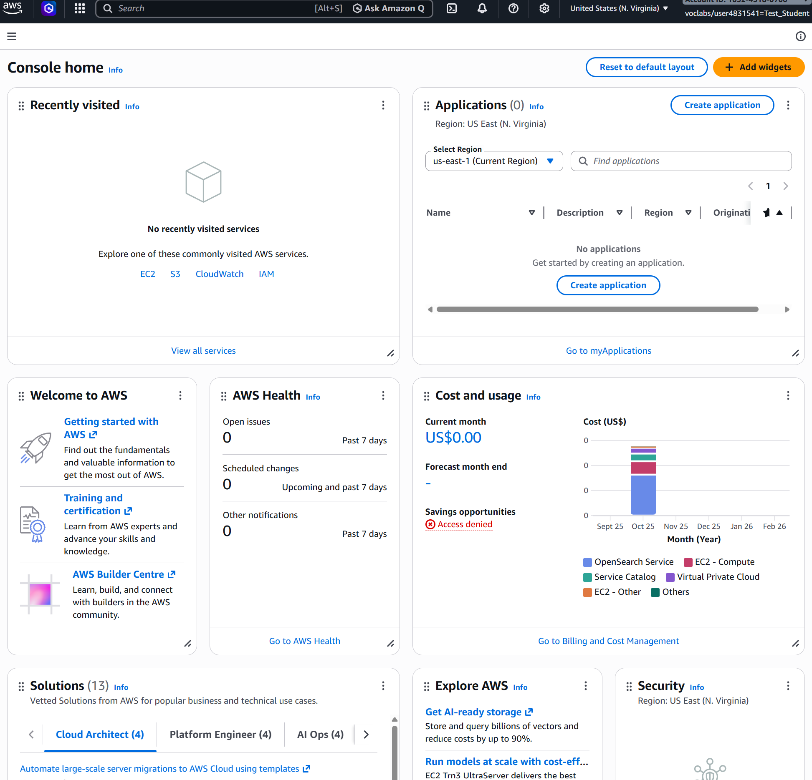

Login to the Practicals Learner Lab [152632]. If the login takes you to your AWS Academy Dashboard, then open the AWS Academy Learner Lab [152632]. This will open the course home page.

Navigate to the Modules tab and select the link for “Launch AWS Academy Learner Lab”. You will need to accept the AWS Academy Learner Lab terms and conditions to be able to launch Learner Lab.
You should also open and browse the “AWS Academy Learner Lab Student Guide” and “Learn how to effectively use the AWS Academy Learner Lab” links, which provide information about using the lab environment.

You should now see the Learner Lab interface.
-
The AWS text, near the top left of the window, with the (currently) red circle is the link to open the AWS console.
-
You can see your budget usage in the same row near the top of the window. Note that the budget is not updated in real-time. Do not rely on the value it displays, if you are getting close to the $50 budget limit.
-
The 00:00 is a countdown of time remaining for your lab. A lab can only remain active for 4 hours, after which it will close, unless you press “Start Lab” again before the 4 hours expires. Once the lab is started, 00:00 will change to 04:00.
-
“AWS Details” will become important later but are not needed now.
-
The “Readme” button will re-open the text panel currently on the right of the terminal interface.
-
The Readme text has a lot of important information, including what AWS services are available in the Learner Labs environment, please read it.
-
The terminal interface is an environment with the SSH keys required to connect to AWS instances semi-automatically (we will use this today).

Notice
If you get an error message saying “labs.vocareum.com refused to connect.”, ensure that your browser is not in the incognito mode. If you still encounter this error, try using a different browser.
Start the lab by clicking on “Start Lab”. It will take a few moments to get ready4. The red circle will turn yellow as the lab is starting, and green once it has started. Click on the AWS text with the green circle when it is available. This will open the AWS Console in a new browser tab. (You may need to enable pop-ups from awsacademy.) If you end up working for a company which uses AWS, welcome to your new home.
